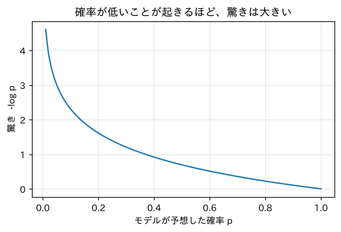

つくるもの 言語モデルの成績を1つの数で表す「損失（loss）」の計算機と、これから全章で使う「記録表」
身につく数学・理論 訓練データと検証データ（過去問と本番） 確率の掛け算とアンダーフロー 対数 log \log log 負の対数尤度＝損失（驚きの平均） スムージングとハイパーパラメータ パープレキシティ（何択で迷っているか） 新しく使うPython・PyTorch math.log関数に初期値つきの引数 float('inf')（無限大）matplotlib でグラフを描くこの章でつくるもの
前の章のbigram モデルは「なんとなく漱石っぽい」文章を書きました。でも「なんとなく」では、モデルを改良しても良くなったのか分かりません。この章では、言語モデルの成績を1つの数 で表す方法を作ります。この数（損失 ）は、この先のすべての章で、モデルの進化を測るものさしになります。
これまでの復習とつながり：第3章・第4章とのつながり
第3章 ：どんな数も正の値に変える指数関数 e x e^x e x softmax を学びました。第4章 ：『こころ』から隣接ペアを数えて条件付き確率 P ( b ∣ a ) P(b \mid a) P ( b ∣ a )
この章では、条件付き確率 P ( b ∣ a ) P(b \mid a) P ( b ∣ a ) 対数・負の対数尤度・損失・パープレキシティ ）を作ります。第3章の e x e^x e x 対数 log \log log が主役として登場します！
ミナト
点数のつけ方って、生成した文章を人間が読んで「80点！」とかじゃダメなんですか？
ボンゴ先生
それも大事な方法だ（第20章でやる）。でも、学習中のモデルは1秒に何百回も成績を知りたがる。毎回キミが読んで採点していたら、キミが先に倒れる。だから「計算だけで出せる点数」が必要なんだ。
準備：『こころ』を読み込む
第4章で作った掃除の関数を、ダウンロード まで含めて1つにまとめておきます。この準備セル は、第10章まで毎回最初に実行します。
Python（Colabのセルに貼って実行） コピー
import re, math, urllib.request
from collections import Counter
def load_soseki (file_id="773_ruby_5968" ):
url = ("https://raw.githubusercontent.com/aozorahack/aozorabunko_text/master/"
f"cards/000148/files/{file_id}/{file_id}.txt" )
text = urllib.request.urlopen(url).read().decode("cp932" )
text = text.split("-------------------------------------------------------" )[2 ]
text = text.split("底本：" )[0 ]
text = re.sub(r"《.*?》" , "" , text)
text = re.sub(r"※?［＃.*?］" , "" , text)
text = text.replace("｜" , "" ).replace("\r\n" , "\n" )
text = re.sub(r"\n{3,}" , "\n\n" , text)
return text.strip()
text = load_soseki()
print (len (text), "文字" )過去問と本番：データを分ける
モデルの点数をつける前に、大事な準備があります。データを2つに分けるのです。
Python（Colabのセルに貼って実行） コピー
n = int (len (text) * 0.9 )
train_text = text[:n] # 前の90%：学習用（数える用）
val_text = text[n:] # 後ろの10%：点数をつける用
print ("訓練データ：" , len (train_text), "文字" )
print ("検証データ：" , len (val_text), "文字" )出力
訓練データ： 146220 文字
検証データ： 16247 文字理論の小部屋：なぜ分けるの？
テスト勉強で、過去問の答えを丸暗記 した人を想像してください。同じ過去問なら満点ですが、本番で少し違う問題が出たら解けません。
モデルも同じです。数えるのに使った文章で点数をつけると、「丸暗記」がうまいほど高得点になってしまいます。本当に知りたいのは「見たことのない文章 でも、次の文字を当てられるか」です。
そこで、データを分けます。
訓練データ （training data）：モデルが学ぶ（数える）ためのデータ。過去問検証データ （validation data）：点数をつけるためだけのデータ。モデルには絶対に見せない。本番の模試
さらに研究では、最後の最後に一度だけ使う テストデータ をもう1つ取っておくこともあります（第20章）。
訓練データだけでbigramを数え直します。
Python（Colabのセルに貼って実行） コピー
pairs = Counter(zip (train_text, train_text[1 :]))
firsts = Counter(train_text[:-1 ])
def prob (a, b):
"""P(b | a)：「a」の次が「b」である確率"""
if firsts[a] == 0 :
return 0.0
return pairs[(a, b)] / firsts[a]
print ("P(生|先) =" , prob("先" , "生" ))
print ("P(は|生) =" , prob("生" , "は" ))出力
P(生|先) = 0.8857566765578635
P(は|生) = 0.23097112860892388確認問題 1 ：モデルの成績を測るとき、全テキストで数えて同じテキストで採点するのではなく、あらかじめ訓練データ（90%） と検証データ（10%） に分ける最大の理由はどれですか？
自動採点・ヒント・解説の表示にはJavaScriptを有効にしてください。
確認問題 2 ：本文では分母のカウントに Counter(train_text[:-1]) を使っています。末尾の1文字を除く理由を確認しましょう。次のコードを実行すると何が表示されますか？
自動採点・ヒント・解説の表示にはJavaScriptを有効にしてください。
文章の確率を計算する
モデルが「この文章はありそうだ」と思うほど、良いモデルのはずです。では、文章全体の確率はどう計算するのでしょう？ 「先生は」が出てくる確率は、「先の次に生」かつ「生の次には」なので、掛け算 になります。
P ( 先生は ) = P ( 生 ∣ 先 ) × P ( は ∣ 生 ) = 0.886 × 0.231 ≈ 0.205 P(\text{先生は}) = P(\text{生} \mid \text{先}) \times P(\text{は} \mid \text{生}) = 0.886 \times 0.231 \approx 0.205 P ( 先生は ) = P ( 生 ∣ 先 ) × P ( は ∣ 生 ) = 0.886 × 0.231 ≈ 0.205 （厳密には最初の「先」の確率も掛けますが、ここでは省きます。）では、訓練データの最初の数百文字で同じことをしてみましょう。どのペアも訓練データで数えたものなので、確率が0になることはないはずです。
Python（Colabのセルに貼って実行） コピー
p = 1.0
for i, (a, b) in enumerate (zip (train_text, train_text[1 :])):
p = p * prob(a, b)
if i in [10 , 50 , 100 , 150 , 200 , 300 ]:
print (f"{i:4d}文字目まで：確率 {p}" )出力
10文字目まで：確率 2.999105026951313e-16
50文字目まで：確率 2.7431965930303487e-71
100文字目まで：確率 5.506246902145188e-135
150文字目まで：確率 1.2818683751043334e-213
200文字目まで：確率 2.0794249766405372e-279
300文字目まで：確率 0.0ボンゴ先生
事件だ！ どのペアも確率は0じゃないのに、掛け算を続けたら、300文字目でとうとうぴったり0 になってしまった。200文字目の e-279 は「10のマイナス279乗」、つまり小数点の後に0が278個並ぶ数だ。宇宙にある原子の数（だいたい 10 80 10^{80} 1 0 80
基本情報とつながる：アンダーフロー
コンピュータの小数（浮動小数点数 ）には、表せる大きさに限界があります。Pythonの float（倍精度、64ビット）では、だいたい 10 − 308 10^{-308} 1 0 − 308 アンダーフロー と言います。基本情報の「浮動小数点数の表現」で、指数部のビット数が限られていることを習いましたね。それがここで牙をむいたのです。
0になってしまうと、どのモデルの確率も「0」で、比べようがありません。どうしましょう？
確認問題 3 ：訓練データでどのペアの確率も0より大きいのに、300文字ほど掛け算し続けると Python が 0.0 と表示してしまう現象の原因と名称として正しいものはどれですか？
自動採点・ヒント・解説の表示にはJavaScriptを有効にしてください。
救世主：対数（log）
ここで登場するのが 対数 （たいすう、logarithm）です。記号を丸暗記するのではなく、「なぜ対数が必要なのか」から9ステップでたどりましょう。
数学の道具箱：対数 $\log$：9ステップで理由から理解する
① 解決したい具体的な問題 ：何千文字もの確率の掛け算 p 1 × p 2 × ⋯ × p N p_1 \times p_2 \times \dots \times p_N p 1 × p 2 × ⋯ × p N モデル間の大小関係を変えずに 計算したい。
② 素朴な掛け算ではなぜダメなのか？ ：確率は必ず 0 ≤ p ≤ 1 0 \le p \le 1 0 ≤ p ≤ 1 10 − 308 10^{-308} 1 0 − 308 float）では 0.0 に丸められて全モデルの点数が同じ 0.0 になってしまいます。
③ 新しい発想 ：「数そのもの」ではなく、「ある基準の数を何回掛けたか（指数の肩の数）」 で数える世界へ引っ越す。指数の世界では掛け算が足し算に化ける （10 2 × 10 3 = 10 2 + 3 10^2 \times 10^3 = 10^{2+3} 1 0 2 × 1 0 3 = 1 0 2 + 3
④ 記号の読み方表 ：
記号 読み方 意味
log 10 x \log_{10} x log 10 x 「ログ10の x x x 10 10 10 x x x log x \log x log x ln x \ln x ln x 「ログ x x x 第3章の e ≈ 2.718 e \approx 2.718 e ≈ 2.718 x x x math.log(x) e x e^x e x log x \log x log x 互いに逆の操作 log ( e x ) = x \log(e^x) = x log ( e x ) = x e log y = y e^{\log y} = y e l o g y = y y > 0 y > 0 y > 0
⑤ 小さな数字で手計算 ：log 10 1000 \log_{10} 1000 log 10 1000 3 です（10 × 10 × 10 = 1000 10 \times 10 \times 10 = 1000 10 × 10 × 10 = 1000
x x x 0.001 0.01 0.1 1 10 100 1000
log 10 x \log_{10} x log 10 x -3 -2 -1 0 1 2 3
1より小さい数はマイナスになります（0.01 は「10で2回割った」＝ 10 − 2 10^{-2} 1 0 − 2 -2）。掛け算も検算してみましょう：0.1 × 0.01 = 0.001 0.1 \times 0.01 = 0.001 0.1 × 0.01 = 0.001 ( − 1 ) + ( − 2 ) = − 3 = log 10 ( 0.001 ) (-1) + (-2) = -3 = \log_{10}(0.001) ( − 1 ) + ( − 2 ) = − 3 = log 10 ( 0.001 )
⑥ 一般式（自然対数） ：機械学習では10の代わりに e ≈ 2.718 e \approx 2.718 e ≈ 2.718 自然対数 log \log log softmax に出てくる e x e^x e x
log ( p 1 × p 2 × ⋯ × p N ) = log p 1 + log p 2 + ⋯ + log p N = ∑ i = 1 N log p i \log(p_1 \times p_2 \times \dots \times p_N) = \log p_1 + \log p_2 + \dots + \log p_N = \sum_{i=1}^{N} \log p_i log ( p 1 × p 2 × ⋯ × p N ) = log p 1 + log p 2 + ⋯ + log p N = i = 1 ∑ N log p i ⑦ Pythonでの検算 （下のセルで実際に確かめます）：math.log(math.e) == 1.0、math.log(1) == 0.0、math.log(0.5) ≈ -0.693。
⑧ よくある誤解 ：log ( a + b ) = log a + log b \log(a + b) = \log a + \log b log ( a + b ) = log a + log b 掛け算 log ( a × b ) = log a + log b \log(a \times b) = \log a + \log b log ( a × b ) = log a + log b log 0 \log 0 log 0 − ∞ -\infty − ∞
Python（Colabのセルに貼って実行） コピー
print (math.log10(1000 ), math.log10(0.01 ))
print (math.log(math.e), math.log(1 ))
print (math.log(0.5 ), math.log(0.01 ))出力
3.0 -2.0
1.0 0.0
-0.6931471805599453 -4.605170185988091理論の小部屋：対数の3つの性質（これだけ覚えればOK）
掛け算が足し算になる ：log ( a × b ) = log a + log b \log(a \times b) = \log a + \log b log ( a × b ) = log a + log b 1は0になる ：log 1 = 0 \log 1 = 0 log 1 = 0 1より小さい数はマイナス 、0に近づくほどどんどんマイナスに大きくなる
性質1がすごいのです。確率の掛け算 を、対数の足し算 に変えられます。足し算なら、何千回くり返しても0にはなりません（-1000とか-5000とかになるだけ）。
Python（Colabのセルに貼って実行） コピー
log_p = 0.0
for i, (a, b) in enumerate (zip (train_text, train_text[1 :])):
log_p = log_p + math.log(prob(a, b))
if i in [10 , 50 , 100 , 200 , 300 ]:
print (f"{i:4d}文字目まで：log確率 {log_p:.1f}" )出力
10文字目まで：log確率 -35.7
50文字目まで：log確率 -162.5
100文字目まで：log確率 -309.1
200文字目まで：log確率 -641.7
300文字目まで：log確率 -951.2もう0になりません。事件解決です。
確認問題 4 ：log ( 0.5 ) ≈ − 0.693 \log(0.5) \approx -0.693 log ( 0.5 ) ≈ − 0.693 log ( 0.5 × 0.5 × 0.5 ) \log(0.5 \times 0.5 \times 0.5) log ( 0.5 × 0.5 × 0.5 ) ± 0.02 \pm 0.02 ± 0.02
自動採点・ヒント・解説の表示にはJavaScriptを有効にしてください。
確認問題 5 ：長い文章の確率 p 1 × p 2 × ⋯ × p N p_1 \times p_2 \times \dots \times p_N p 1 × p 2 × ⋯ × p N log p 1 + log p 2 + ⋯ + log p N \log p_1 + \log p_2 + \dots + \log p_N log p 1 + log p 2 + ⋯ + log p N
自動採点・ヒント・解説の表示にはJavaScriptを有効にしてください。
損失：驚きの平均
「log確率の合計」は文章が長いほどマイナスに大きくなるので、長さの違う文章どうしを比べにくいです。そこで、1文字あたりの平均 にします。さらに、マイナスの数は扱いにくいので、符号をひっくり返して プラスにします。これが言語モデルの点数、損失 （loss）です。
L = − 1 N ∑ i = 1 N log p i = − 1 N ∑ i = 1 N log P ( 次の文字 i ∣ 今の文字 i ) L = -\frac{1}{N}\sum_{i=1}^{N} \log p_i = -\frac{1}{N}\sum_{i=1}^{N} \log P(\text{次の文字}_i \mid \text{今の文字}_i) L = − N 1 i = 1 ∑ N log p i = − N 1 i = 1 ∑ N log P ( 次の文字 i ∣ 今の文字 i ) 数学の道具箱：なぜ $1-p$ ではなく $-\log p$ なのか？：9ステップで理由から理解する
① 解決したい具体的な問題 ：正解文字に対する予測確率 p 1 , p 2 , … , p N p_1, p_2, \dots, p_N p 1 , p 2 , … , p N L L L
② 素朴な方法（1 − p 1 - p 1 − p ( 1 − p ) 2 (1 - p)^2 ( 1 − p ) 2 「外れ度合いなら 1 − p 1 - p 1 − p ( 1 − p ) 2 (1 - p)^2 ( 1 − p ) 2
モデルが正解につけた確率 p p p 1 − p 1 - p 1 − p ( 1 − p ) 2 (1 - p)^2 ( 1 − p ) 2 − log p -\log p − log p
1.0 1.0 1.0 0.00 0.00 0.00 0.00 0.00 0.00 0.00 0.00 0.00 0.5 0.5 0.5 0.50 0.50 0.50 0.25 0.25 0.25 0.69 0.69 0.69 0.01 0.01 0.01 0.99 0.99 0.99 0.9801 0.9801 0.9801 4.61 4.61 4.61 0.0001 0.0001 0.0001 0.9999 0.9999 0.9999 0.9998 0.9998 0.9998 9.21 9.21 9.21 0 0 0 1.00 1.00 1.00 1.00 1.00 1.00 ∞ \infty ∞
欠点1（大外れに甘すぎる） ：1 − p 1 - p 1 − p ( 1 − p ) 2 (1 - p)^2 ( 1 − p ) 2 0.99 vs 0.9999 でほとんど差がつかず、「絶対に起きない（p = 0 p=0 p = 0 1.0 の減点で済んでしまいます。一方 − log p -\log p − log p p p p 欠点2（同時確率の積と一致しない） ：1 − p 1 - p 1 − p ∏ i = 1 N p i \prod_{i=1}^N p_i ∏ i = 1 N p i − log p -\log p − log p ∏ i p i \prod_i p_i ∏ i p i − 1 N log ∏ i p i = − 1 N ∑ i log p i -\frac{1}{N}\log \prod_i p_i = -\frac{1}{N}\sum_i \log p_i − N 1 log ∏ i p i = − N 1 ∑ i log p i 先取りの利点（第8章） ：第3章の softmax と − log p -\log p − log p p − y p - y p − y
③ 記号の読み方表 ：
記号 読み方・役割
L L L 損失（Loss）。小さいほど良い（0が完璧） − - − 負の対数 log p i ≤ 0 \log p_i \le 0 log p i ≤ 0 1 N \frac{1}{N} N 1 ペア総数 N N N ∑ i = 1 N \sum_{i=1}^{N} ∑ i = 1 N i = 1 i=1 i = 1 N N N ∑ \sum ∑ p i p_i p i i i i P ( 次 i ∣ 今 i ) P(\text{次}_i \mid \text{今}_i) P ( 次 i ∣ 今 i )
④ 小さな数字で手計算 ：3ステップの正解確率が p = [ 0.5 , 0.5 , 1.0 ] p = [0.5,\; 0.5,\; 1.0] p = [ 0.5 , 0.5 , 1.0 ] log 0.5 ≈ − 0.693 , log 1.0 = 0 \log 0.5 \approx -0.693,\; \log 1.0 = 0 log 0.5 ≈ − 0.693 , log 1.0 = 0
L = − 1 3 ( log 0.5 + log 0.5 + log 1.0 ) ≈ − 1 3 ( − 0.693 − 0.693 + 0 ) = 1.386 3 = 0.462 L = -\frac{1}{3}\bigl(\log 0.5 + \log 0.5 + \log 1.0\bigr) \approx -\frac{1}{3}(-0.693 - 0.693 + 0) = \frac{1.386}{3} = 0.462 L = − 3 1 ( log 0.5 + log 0.5 + log 1.0 ) ≈ − 3 1 ( − 0.693 − 0.693 + 0 ) = 3 1.386 = 0.462 ⑤ Pythonの最小コードで検算 ：
Python（読むだけ・実行しなくてOK） コピー
import math
probs = [0.5 , 0.5 , 1.0 ]
loss = -sum (math.log(p) for p in probs) / len (probs)
print (round (loss, 3 )) # 0.462 理論の小部屋：損失は「驚き」の平均
− log p -\log p − log p p p p 驚きの大きさ と考えられます。
天気予報に例えてみましょう。
「明日は100%晴れ」と予報して本当に晴れたら、驚きはゼロです（− log 1 = 0 -\log 1 = 0 − log 1 = 0
「降水確率50%」と言われて雨が降ったら、コイントスが裏だったくらいで少し驚きます（− log 0.5 ≈ 0.69 -\log 0.5 \approx 0.69 − log 0.5 ≈ 0.69
「降水確率1%」と言われて雨が降ったら、「えっ、降ったの！？」とかなり驚きます（− log 0.01 ≈ 4.6 -\log 0.01 \approx 4.6 − log 0.01 ≈ 4.6
「降水確率0%（絶対に雨は降らない）」と断言していたのに土砂降りになったら、「嘘でしょ！？」と無限大にショックを受けます（− log 0 = ∞ -\log 0 = \infty − log 0 = ∞
損失は、モデルが検証データを1文字ずつ読みながら感じた「驚き」の平均です。良いモデルほど、次の文字を正しく予想できているので、驚きが少ない。だから 損失は小さいほど良い のです。ゴルフのスコアと同じですね。
ちなみに、この量は 負の対数尤度 （negative log-likelihood、NLL）や、交差エントロピー （cross-entropy）とも呼ばれます。名前はいかめしいですが、中身は「驚きの平均」です。
驚きの大きさをグラフにしてみましょう。グラフを描く道具 matplotlib を使います（日本語を表示するための追加の道具も入れます）。
Python（Colabのセルに貼って実行） コピー
!pip install -q matplotlib-fontja Python（Colabのセルに貼って実行） コピー
import matplotlib.pyplot as plt
import matplotlib_fontja
ps = [i / 100 for i in range (1 , 101 )]
plt.figure(figsize=(6 , 3.5 ))
plt.plot(ps, [-math.log(p) for p in ps])
plt.xlabel("モデルが予想した確率 p" )
plt.ylabel("驚き -log p" )
plt.title("確率が低いことが起きるほど、驚きは大きい" )
plt.grid(alpha=0.3 )
plt.show()

それでは、訓練データと検証データで損失を計算してみましょう。
Python（Colabのセルに貼って実行） コピー
def bigram_loss (data, prob_fn):
total = 0.0
for a, b in zip (data, data[1 :]):
p = prob_fn(a, b)
if p == 0 :
return float ("inf" ) # 確率0の出来事 → 驚きは無限大
total += -math.log(p)
return total / (len (data) - 1 )
print ("訓練データの損失：" , bigram_loss(train_text, prob))
print ("検証データの損失：" , bigram_loss(val_text, prob))出力
訓練データの損失： 3.010172965334805
検証データの損失： infボンゴ先生
検証データには、訓練データで一度も見たことがない 文字のペアが出てくるからだ。数えるだけのモデルは、見たことのないペアに確率0をつける。そして、確率0のことが起きたら、驚きは無限大。モデルは「絶対にありえない！」と言い張っていたのに、起きてしまったわけだ。
Python（Colabのセルに貼って実行） コピー
unseen = sum (1 for a, b in zip (val_text, val_text[1 :]) if pairs[(a, b)] == 0 )
print ("検証データのペア：" , len (val_text) - 1 , "個のうち、訓練で見ていないもの：" , unseen, "個" )出力
検証データのペア： 16246 個のうち、訓練で見ていないもの： 1315 個基礎の補足 理解のための最小コード：`float("inf")` とゼロ確率ガードPythonで math.log(0) を直接呼ぶと ValueError: math domain error で強制終了してしまいます。そこで if p == 0: return float("inf") で先にガードしています。
式 値 型 性質
x = float("inf")inf（正の無限大）float（文字列ではない！）どんな有限の float より大きい（x > 1e300 は True） math.isinf(x)Truebool無限大かどうか安全に判定する標準関数 math.log(0)ValueError例外でクラッシュ そのため p == 0 は必ず事前に分岐する
Python（読むだけ・実行しなくてOK） コピー
import math
inf = float ("inf" )
print (type (inf), inf > 1e300 , math.isinf(inf)) # <class 'float'> True True 確認問題 6 ：正解トークンにモデルが割り当てた確率を p p p 1 − p 1 - p 1 − p ( 1 − p ) 2 (1 - p)^2 ( 1 − p ) 2 − log p -\log p − log p 最も適切 なものはどれですか？
自動採点・ヒント・解説の表示にはJavaScriptを有効にしてください。
確認問題 7 ：3ステップの予測で、正解文字に対するモデルの予測確率がそれぞれ p 1 = 0.5 , p 2 = 0.5 , p 3 = 1.0 p_1 = 0.5, \; p_2 = 0.5, \; p_3 = 1.0 p 1 = 0.5 , p 2 = 0.5 , p 3 = 1.0 log 0.5 ≈ − 0.693 , log 1.0 = 0 \log 0.5 \approx -0.693, \; \log 1.0 = 0 log 0.5 ≈ − 0.693 , log 1.0 = 0 L = − 1 3 ∑ i = 1 3 log p i L = -\dfrac{1}{3}\sum_{i=1}^{3} \log p_i L = − 3 1 ∑ i = 1 3 log p i ± 0.01 \pm 0.01 ± 0.01
自動採点・ヒント・解説の表示にはJavaScriptを有効にしてください。
確認問題 8 ：モデルAの検証データの損失は 3.2、モデルBの検証データの損失は 2.9、モデルCの検証データの損失は inf でした。最も良いモデルと、inf になった理由の組み合わせはどれですか？
自動採点・ヒント・解説の表示にはJavaScriptを有効にしてください。
確認問題 9 ：各ステップの正解文字に対する予測確率のリスト probs を受け取り、平均損失（負の対数尤度）loss とパープレキシティ ppl = math.exp(loss) のタプル (loss, ppl) を返す関数 eval_probs(probs) を自力実装してください。リスト内に p <= 0 が1つでも含まれる場合は (float("inf"), float("inf")) を返します。
自動採点・ヒント・解説の表示にはJavaScriptを有効にしてください。
「絶対」を言わないモデル：スムージング
対策はシンプルです。どのペアにも、ほんの少しだけ回数を足しておく のです。見たことがないペアにも「0.01回くらいは見たかもね」とおまけをつける。これを スムージング （smoothing、なめらかにする）と言います。
P ( b ∣ a ) = 「ab」の回数 + k 「a」の回数 + k × V P(b \mid a) = \frac{\text{「ab」の回数} + k}{\text{「a」の回数} + k \times V} P ( b ∣ a ) = 「 a 」の回数 + k × V 「 ab 」の回数 + k V V V k × V k \times V k × V b b b k k k
数学の道具箱：小さな手計算で確かめる（$V = 4$、$k = 1$）
語彙が あ, い, う, え（V = 4 V = 4 V = 4 あい:3, あう:2, ああ:1, あえ:0）だったとします。全4文字に k = 1 k = 1 k = 1 k × V = 1 × 4 = 4 k \times V = 1 \times 4 = 4 k × V = 1 × 4 = 4 6 + 4 = 10 6 + 4 = 10 6 + 4 = 10
次の文字 b b b 元の回数 + k +k + k スムージング後の確率 P ( b ∣ あ ) P(b \mid \text{あ}) P ( b ∣ あ )
い 3 3 + 1 = 4 3+1=4 3 + 1 = 4 4 / 10 = 0.4 4/10 = 0.4 4/10 = 0.4 う 2 2 + 1 = 3 2+1=3 2 + 1 = 3 3 / 10 = 0.3 3/10 = 0.3 3/10 = 0.3 あ 1 1 + 1 = 2 1+1=2 1 + 1 = 2 2 / 10 = 0.2 2/10 = 0.2 2/10 = 0.2 え（未出現！） 0 0 + 1 = 1 0+1=1 0 + 1 = 1 1 / 10 = 0.1 1/10 = 0.1 1/10 = 0.1 合計 6 6 + 4 = 10 6 + 4 = 10 6 + 4 = 10 0.4 + 0.3 + 0.2 + 0.1 = 1.0 0.4 + 0.3 + 0.2 + 0.1 = 1.0 0.4 + 0.3 + 0.2 + 0.1 = 1.0
もし分母に + k × V +k \times V + k × V 10 / 6 = 1.67 10/6 = 1.67 10/6 = 1.67 k × V k \times V k × V V V V k k k
Python（Colabのセルに貼って実行） コピー
V = len (set (text))
def make_smoothed (k):
def p (a, b):
return (pairs[(a, b)] + k) / (firsts[a] + k * V)
return p
for k in [1 , 0.1 , 0.01 , 0.001 ]:
p_k = make_smoothed(k)
print (f"k={k:<6} 訓練 {bigram_loss(train_text, p_k):.3f} 検証 {bigram_loss(val_text, p_k):.3f}" )出力
k=1 訓練 4.303 検証 4.385
k=0.1 訓練 3.488 検証 3.748
k=0.01 訓練 3.139 検証 3.581
k=0.001 訓練 3.033 検証 3.652Pythonの道具箱：関数を作る関数
make_smoothed(k) は、k の値を覚えた確率関数 p を作って返す関数です。関数も変数のように受け渡しできるのがPythonの面白いところです。今は「k ごとに別の確率関数を作っている」と分かればOKです。
基礎の補足 理解のための最小コード：クロージャ（関数を返す関数 `make_smoothed(k)`）「関数の中で別の関数 def p(...) を作り、その関数自体を return p で返す」仕組みを クロージャ（closure） と呼びます。外側の引数 k を内側の関数が記憶し続けるのがポイントです。
ステップ コード 返る値・型 起きていること
① 工場を呼ぶ p_k = make_smoothed(0.01)function（まだ確率計算はしない！）k=0.01 を覚えた新しい関数 p が作られる② 渡す bigram_loss(val_text, p_k)関数をそのまま引数 prob_fn に渡す bigram_loss の中で毎回 p_k(a, b) が呼ばれる③ 実行 p_k("先", "生")float（約 0.855）記憶していた k=0.01 を使って確率を計算する
最小の例で動きを確かめましょう：
Python（読むだけ・実行しなくてOK） コピー
def make_adder (k):
def f (x):
return x + k # 外側の k を覚えている！
return f # 関数そのものを返す（f() と呼ばない点に注意）
add2 = make_adder(2 ) # type(add2) は <class 'function'>
add10 = make_adder(10 )
print (add2(5 ), add10(5 )) # 7 15 理論の小部屋：ハイパーパラメータは検証データで選ぶ
k は小さいほど訓練 の損失は良くなります（数えた結果に忠実になるので）。でも検証 の損失は、k=0.01 がいちばん良く、小さすぎても大きすぎても悪化しています。
k が大きすぎる：おまけが多すぎて、せっかく数えた知識が薄まる（「先」の次の「生」まで、他の文字と大差なくなる）k が小さすぎる：見たことのないペアへの驚きが大きすぎる
種類 誰が決める？ 例（この章〜今後の章）
パラメータ 訓練データ から自動で決まるbigramの回数表・確率表、ニューラルネットの重み行列（第6章） ハイパーパラメータ 人間 が事前に決め、検証データ で選ぶスムージングの k、学習率（第7章）、層の数、温度 T
ハイパーパラメータは、検証データの成績で選ぶ のが鉄則です。訓練データで選ぶと、「丸暗記」に有利な値（k=0）を選んでしまいます。
確認問題 10 ：語彙数 V = 4 V = 4 V = 4 あ, い, う, え）の小さな世界で、訓練データに「あ」が6回登場し、次の文字の内訳は あい: 3回, あう: 2回, ああ: 1回, あえ: 0回 でした。k = 1 k = 1 k = 1 P ( え ∣ あ ) = count ( あ , え ) + k count ( あ ) + k × V P(\text{え} \mid \text{あ}) = \dfrac{\text{count}(\text{あ}, \text{え}) + k}{\text{count}(\text{あ}) + k \times V} P ( え ∣ あ ) = count ( あ ) + k × V count ( あ , え ) + k
自動採点・ヒント・解説の表示にはJavaScriptを有効にしてください。
確認問題 11 ：本文の make_smoothed(k) のように「設定値を覚えた関数を返す関数（クロージャ）」の動きを確認します。次のコードを実行すると何が表示されますか？
自動採点・ヒント・解説の表示にはJavaScriptを有効にしてください。
確認問題 12 ：スムージング定数 k（ハイパーパラメータ）を決めるとき、訓練データの損失ではなく検証データの損失 で選ぶ理由として正しいものはどれですか？
自動採点・ヒント・解説の表示にはJavaScriptを有効にしてください。
確認問題 13 ：ペア回数辞書 pairs（Counter）、1文字目回数辞書 firsts（Counter）、語彙数 V、スムージング定数 k を受け取り、(a, b) からスムージング付き条件付き確率 P ( b ∣ a ) = pairs [ ( a , b ) ] + k firsts [ a ] + k × V P(b \mid a) = \dfrac{\text{pairs}[(a, b)] + k}{\text{firsts}[a] + k \times V} P ( b ∣ a ) = firsts [ a ] + k × V pairs [( a , b )] + k make_smoothed_prob(pairs, firsts, V, k) を自力実装してください。
自動採点・ヒント・解説の表示にはJavaScriptを有効にしてください。
パープレキシティ：何択で迷っているか
損失「3.581」と言われても、ピンとこないかもしれません。そこで、もう少し直感的な数に変換します。
パープレキシティ = e 損失 \text{パープレキシティ} = e^{\text{損失}} パープレキシティ = e 損失 Python（Colabのセルに貼って実行） コピー
print ("bigram（k=0.01）のパープレキシティ：" , math.exp(3.581 ))
print ("でたらめに選ぶモデルの損失：" , math.log(V), " パープレキシティ：" , math.exp(math.log(V)))出力
bigram（k=0.01）のパープレキシティ： 35.909432330660664
でたらめに選ぶモデルの損失： 7.630946580890459 パープレキシティ： 2061.0理論の小部屋：パープレキシティ＝「何択問題で迷っているか」
パープレキシティ （perplexity、困惑度）は、「モデルが毎回、だいたい何個の候補の中で迷っているか」を表します。英語の perplexity は「困惑・当惑」という意味です。
2061文字から完全にでたらめに選ぶモデル：毎回2061択で迷う → パープレキシティ2061（損失は log 2061 ≈ 7.63 \log 2061 \approx 7.63 log 2061 ≈ 7.63
私たちのbigramモデル：だいたい36択くらいまで絞り込めている → パープレキシティ約36
4択クイズなら迷いは4ですが、2061択のマークシートを毎回渡されたら頭を抱えますよね。パープレキシティが約36ということは、モデルの頭の中では「実質36択のクイズを解いているくらいの迷い度合い」まで選択肢を絞り込めている、ということです。
小さな数字で確かめてみましょう：
毎回4択を均等（確率 1 / 4 = 0.25 1/4 = 0.25 1/4 = 0.25 L = − log ( 1 / 4 ) = log 4 ≈ 1.386 L = -\log(1/4) = \log 4 \approx 1.386 L = − log ( 1/4 ) = log 4 ≈ 1.386 PPL = e log 4 = 4 \text{PPL} = e^{\log 4} = 4 PPL = e l o g 4 = 4
毎回100%的中（確率 1.0 1.0 1.0 L = − log 1 = 0 L = -\log 1 = 0 L = − log 1 = 0 PPL = e 0 = 1 \text{PPL} = e^0 = 1 PPL = e 0 = 1
2061択から36択へ。数えるだけで、迷いを約57分の1にできたわけです。なかなかやります。
確認問題 14 ：ある言語モデルの検証データの損失がちょうど L = log 10 ≈ 2.303 L = \log 10 \approx 2.303 L = log 10 ≈ 2.303 パープレキシティ （PPL = e L \text{PPL} = e^L PPL = e L
自動採点・ヒント・解説の表示にはJavaScriptを有効にしてください。
記録表をつけよう
これから章を進むごとに、新しいモデルを作り、この検証データの損失 で成績を比べていきます。いわば、モデルの進化の記録表です。
モデル 章 検証データの損失 パープレキシティ
でたらめ（一様分布） 5 7.631 2061 bigram（数える、k=0.01） 5 3.581 35.9 ？？？ 8 ？ ？ ？？？ 9 ？ ？ ？？？ 13 ？ ？
どこまで小さくできるでしょうか。ちなみに、第13章のGPTは……それは見てのお楽しみ。
確認問題 15 ：記録表で「でたらめモデル」は検証損失 7.631（パープレキシティ 2061）、「bigram（k=0.01）」は検証損失 3.581（パープレキシティ 35.9）でした。この数字の改善が直感的に何を意味するのか、また k を 0.001 に下げたときに検証損失が 3.652 へ悪化した理由とあわせて説明してください。
自動採点・ヒント・解説の表示にはJavaScriptを有効にしてください。
もっと深く 情報理論との関係（ビットで数える）自然対数の代わりに log 2 \log_2 log 2 ビット になります。「1文字を予測するのに、平均何ビット分の情報が足りないか」という意味で、エントロピー という考え方につながります。log 2 x = log x / log 2 \log_2 x = \log x / \log 2 log 2 x = log x / log 2 情報理論 から来ています。シャノンは英語の1文字あたりのエントロピーを、人間に次の文字を当てさせる実験で推定しました。まさに人間を言語モデルとして使ったわけです。
つまずき注意：よくあるつまずき
ValueError: math domain errormath.log(0) を計算しようとしています。確率0が混ざっていないか確認しましょう（それがこの章の事件です）。グラフの日本語が「□□□」になる ：import matplotlib_fontja を忘れていませんか？ その前の !pip install -q matplotlib-fontja も実行しましょう。
まとめ
データは 訓練用 と 検証用 に分ける。点数は検証データでつける
確率の掛け算はすぐ0になる（アンダーフロー）。対数 で足し算にする
損失 ＝ − log ( 確率 ) -\log(\text{確率}) − log ( 確率 ) 見たことのないものに確率0をつけると損失が無限大。スムージング で防ぐ
パープレキシティ ＝ e 損失 e^{\text{損失}} e 損失
ボンゴ先生
数えるモデルの限界は見えてきた。じゃあ「学習する」モデルを作ろう……と言いたいところだが、その前に道具をそろえる。2061行×2061列の数の表を、Pythonの辞書でちまちま扱っていたら日が暮れる。次の章では、大量の数を一気に計算する道具「テンソル」を手に入れる。GPUの本領発揮もそこからだ。
この章の説明を読み終えた！ 説明の読了チェックです（ブラウザ内にのみ保存）。「理解・定着」は途中の確認問題・自力実装・間隔復習の結果と合わせて記録されます。